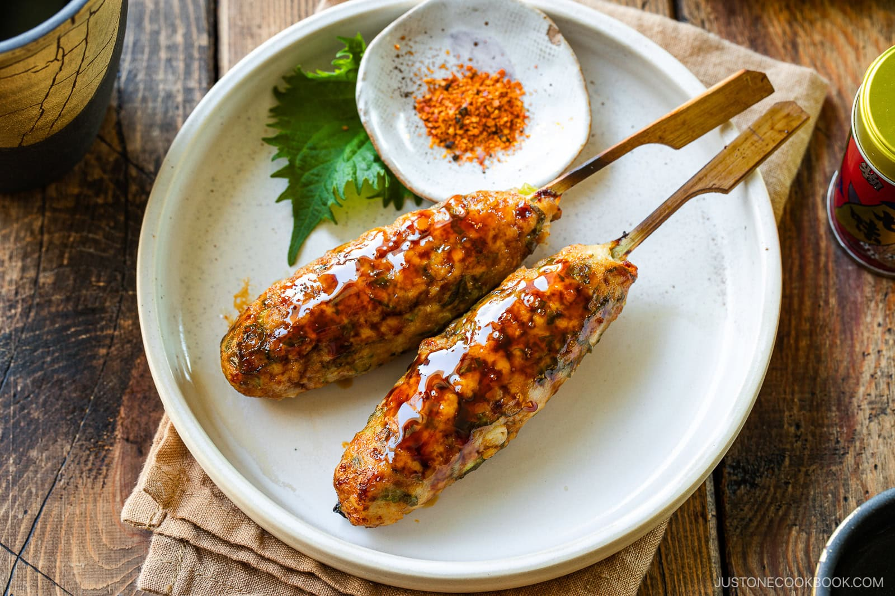

Okonomiyaki
(Japanese: お好み焼き) is a savory Japanese pancake made with cabbage and a variety of additional ingredients, grilled on a hot plate. Its name roughly means “grilled as you like it,” reflecting the customizable nature of the dish. It is especially popular in Osaka and Hiroshima, each of which has its own distinct style.
Key Characteristics
- Base ingredients: A batter made from flour, eggs, dashi (Japanese soup stock), and finely shredded cabbage.
- Add-ins: Common additions include pork belly, seafood (such as shrimp or squid), cheese, or vegetables.
- Sauce: Topped with a thick, sweet-savory okonomiyaki sauce (similar to Worcestershire sauce), Japanese mayonnaise, dried seaweed flakes (aonori), and bonito flakes (katsuobushi). Cooking style: Typically cooked on a flat iron griddle (teppan). In some restaurants, diners cook it themselves at the table. Regional Styles: Osaka-style: All ingredients are mixed into the batter before cooking. Hiroshima-style: Ingredients are layered rather than mixed, and it often includes yakisoba noodles and a fried egg on top. How to Make Okonomiyaki: Prepare the batter: Mix flour, eggs, and dashi until smooth. Add cabbage and fillings: Stir shredded cabbage and your chosen ingredients into the batter (for Osaka style). Cook: Pour the mixture onto a hot, lightly oiled pan and shape into a thick pancake. Cook on both sides until golden brown and cooked through. Add toppings: Brush with okonomiyaki sauce, drizzle with mayonnaise, and sprinkle with aonori and bonito flakes before serving.
How to Make Okonomiyaki: